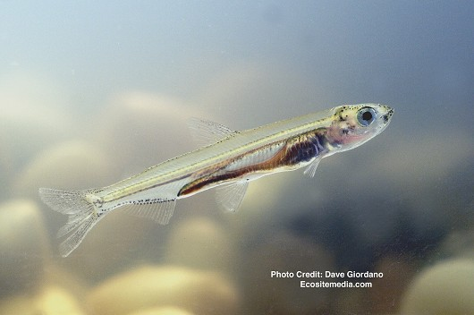
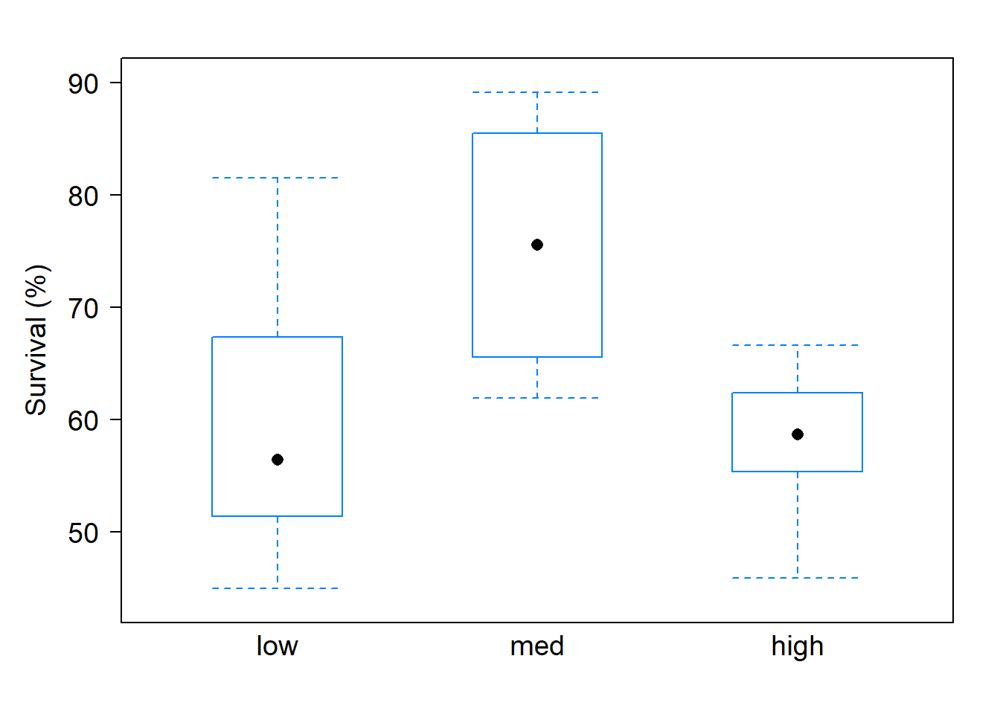

1 Case study 1
1.1 Delta smelt
The Delta smelt is a small fish that smells like peeled cucumbers, with lifespan of about a year. It is a species that lives in Sacramento-San Joaquin River Delta, where more than half of fresh water in the state is moved through the delta for usage by residents, as well as the agriculture and industry sectors. The delta smelt is keystone species that is sensitive to changes in it’s habitat and its population is endangered. Its decline is of concern since the Delta smelt’s population serves as an indicator of the health of the Delta’s ecosystem as this fish is an important part of the food chain.
Light intensity is the amount of illumination at the water surface. The turbidity of water is measure haziness or cloudiness of the water. Both of these environmental factors have been found to influence fish behavior. The effects of these environmental factors on the feeding, growth, and survival of larvae were investigated on the Delta smelt, where such understanding would be vital for improving the conservation of this endangered fish species (Tigan et al. (2020)). For their investigation, three sets of rearing trials were conducted where larvae were cultured under different levels of turbidity (measures in nephelometric turbidity units (NTUs)) and light intensity (measured in \(\mu mol/m^2/s\)) . Delta smelt larvae feeding activity was observed throughout the initial adjustment of light and turbidity levels to ascertain feeding ability and behavior at the different levels.
For brevity, we focus on the following question: Do levels of light intensity (measured in \(\mu mol/m^2/s\)) affect survival rates of early-stage Delta smelt larvae?
We address this question using data on the percentage of early-stage Delta smelt larvae (0–40 days post hatch) that survived when reared under different conditions (low, medium, high) of light intensities, measured in \(\mu mol/m^2/s\). The data are shown in the table below.
Summary of findings
Numerical and graphical summaries of the survival of all early-stage Delta smelt larvae (0–40 dph) in the study reared under different light intensities are provided below.

| Light | Mean | SD |
|---|---|---|
| low | 59.606 | 12.809 |
| med | 75.518 | 12.242 |
| high | 58.185 | 6.345 |
When reared under different conditions of light intensities, the data summaries show that early-stage Delta smelt larvae (0–40 days post hatch) tended to have a higher percentage of survival under medium light intensity (sample mean survival percentage of 75.518) and similar percentages of survival under low and high light intensity. Is the sample mean survival percentage under medium light intensity different enough compared to the mean under low and high light intensity to convince you that survival rates are affected by the strength of light intensity? Using statistical methods to be discussed later, the data provides moderate evidence that survival rates are affected by the strength of light intensity (p-value=.059)
Scope of inference
Treatments (low, medium, and high light intensities) were imposed on the subjects (early-stage Delta smelt larvae), but the treatment levels were not randomly assigned. Although the data provides suggestive evidence that light intensity affects survival rates, the analysis can not say whether changes in light intensity cause changes in survival rates. While there is a suggestive association between the treatment and rate of survival, other possible explanations may exist. Because the subjects were not randomly selected from some larger population, our findings that survival rates are affected by the strength of light intensity only apply to those subjects in the sample and not some larger population.
Tigan, Galen, William Mulvaney, Luke Ellison, Andrew Schultz, and Tien-Chieh Hung. 2020. “Effects of Light and Turbidity on Feeding, Growth, and Survival of Larval Delta Smelt (Hypomesus Transpacificus, Actinopterygii, Osmeridae).” Hydrobiologia 847 (13): 2883–94. https://doi.org/10.1007/s10750-020-04280-4.